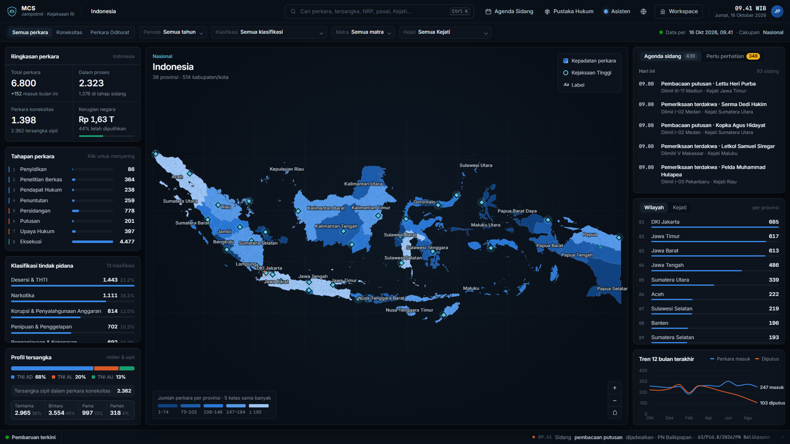
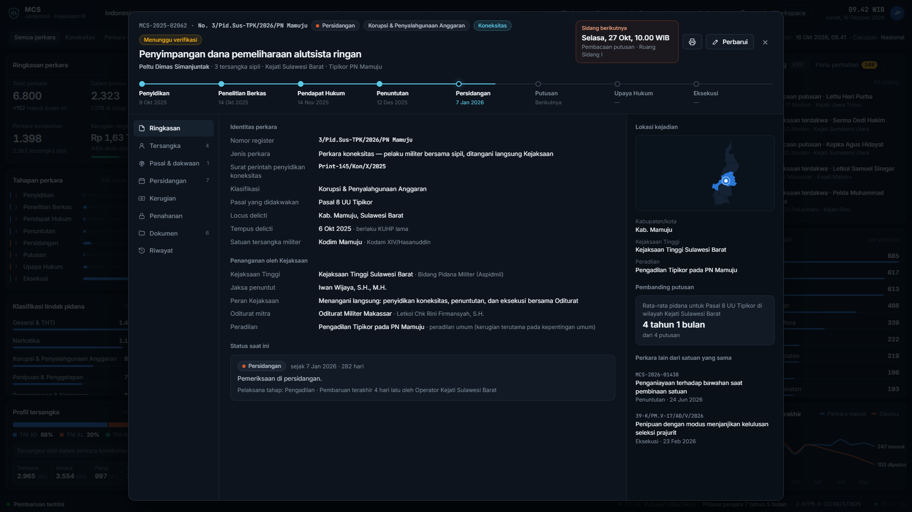
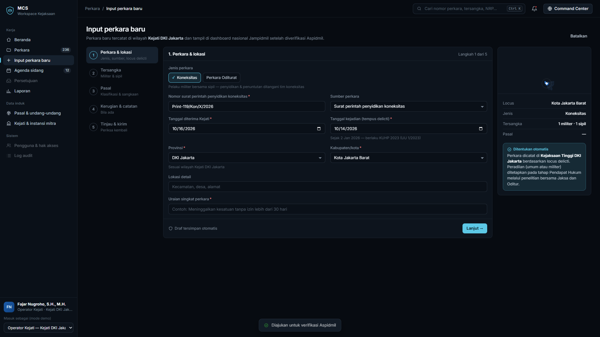
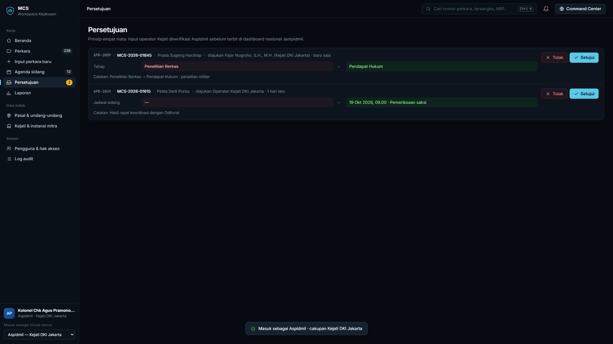
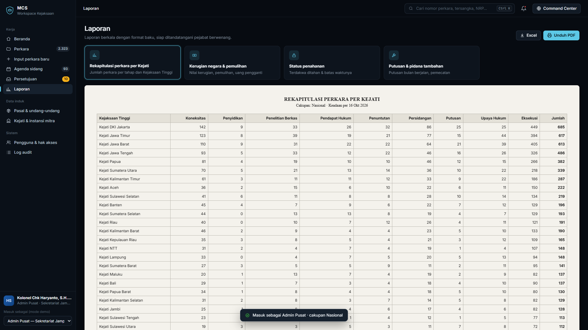
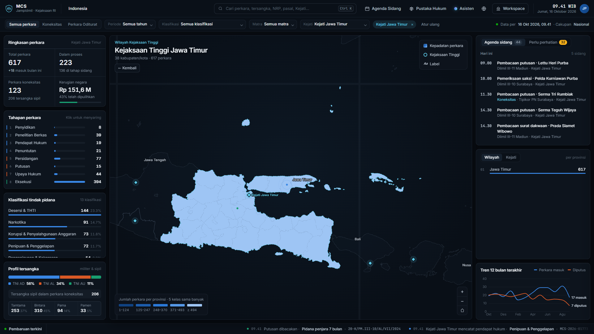
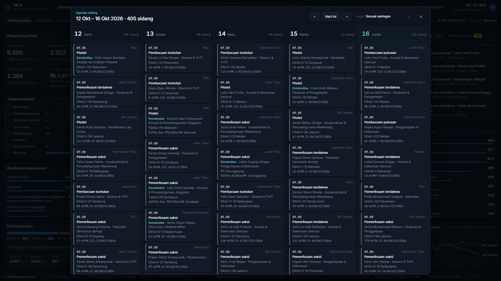
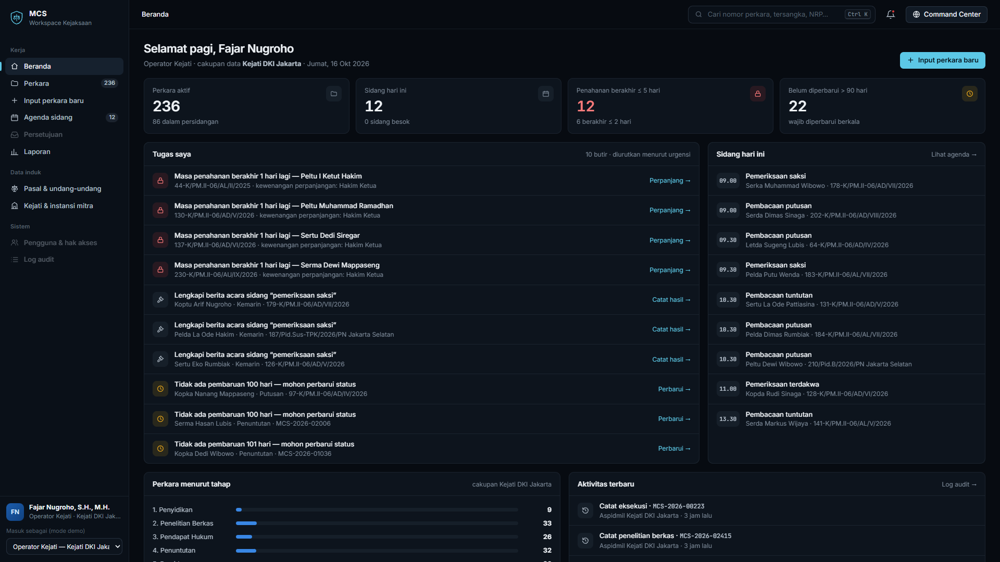

MCS mencatat dan memantau seluruh perkara pidana militer secara nasional. Setiap Kejaksaan Tinggi mengisi langsung, sehingga Jampidmil dapat melihat kondisi perkara kapan saja tanpa menunggu rekap manual.
Operator di 33 Kejati menginput perkara dan memperbarui perkembangannya.
Setiap perubahan diverifikasi sebelum tampil secara nasional.
Peta sebaran, tahapan, jadwal sidang, kerugian negara, dan peringatan dini.
Prajurit TNI bersama warga sipil. Ditangani langsung oleh Kejaksaan, dari penyidikan sampai eksekusi.
Prajurit TNI, dituntut oleh Oditur. Kejaksaan mengkoordinasikan dan memantau.






| Bagian | Teknologi | Keterangan |
|---|---|---|
| Tampilan | React, TypeScript, D3 | Peta wilayah 38 provinsi dan 514 kabupaten/kota |
| Aplikasi | Node.js, NestJS | Satu bahasa (TypeScript) untuk tampilan dan aplikasi |
| Data & berkas | MySQL 8, MinIO | Data perkara dan berkas tersimpan di server MCS sendiri |
| Pemasangan | Docker, Nginx, HTTPS | Mudah dipasang, diperbarui, dan dipindah antarserver |
Daftar pekerjaan GoVirtual dan pembagian tugas dengan tim infrastruktur.
PIC dari Jampidmil dan dari Kejati yang menjadi pengguna awal.
Contoh BAP, dakwaan, putusan (disamarkan), format nomor surat, dan data induk Kejati.
Siap pertengahan bulan 3, sesuai dokumen kebutuhan server.